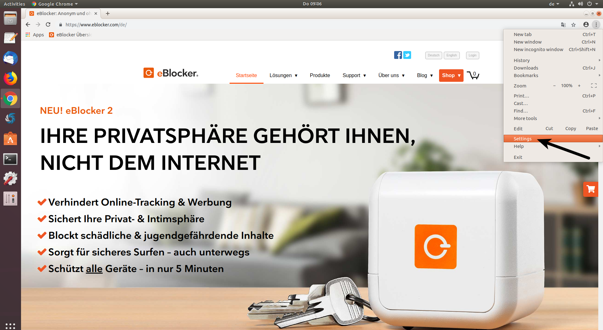
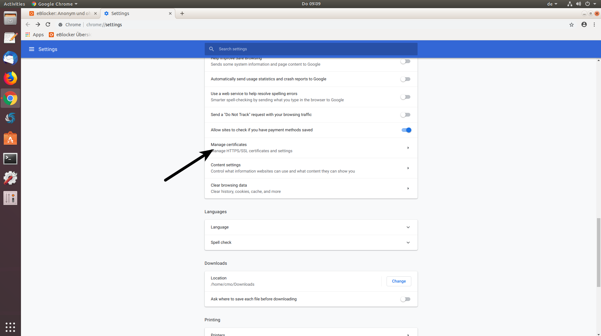

eBlocker Help > FAQs > HTTPS function (SSL/HTTPS)
Linux users usually have the choice between the Firefox browser and the Chromium browser. The Chromium Browser is the part of the web browser Google Chrome provided by Google as an open source software project.
Linux users with the Firefox browser, or a browser based on the Firefox browser, can easily store the eBlocker certificate. Just follow our Firefox browser instructions.
Please use the Chromium / Chrome Browser, or a browser based on the Chromium browser.



Please check the eBlocker settings > menu HTTPS > tab TRUSTED APPS and see if you should activate further exceptions for e.g. Feroda Linux, Ubuntu Linux, OpenSUSE, or for e.g. Linux Mint.